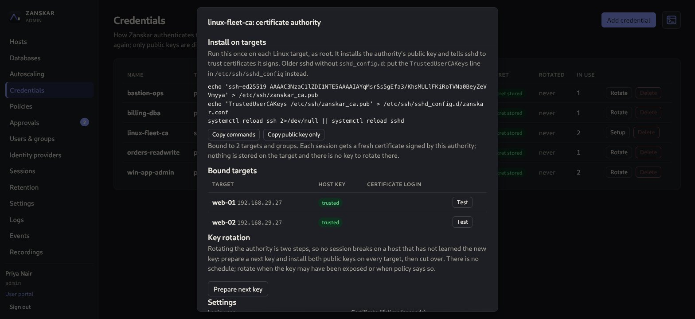
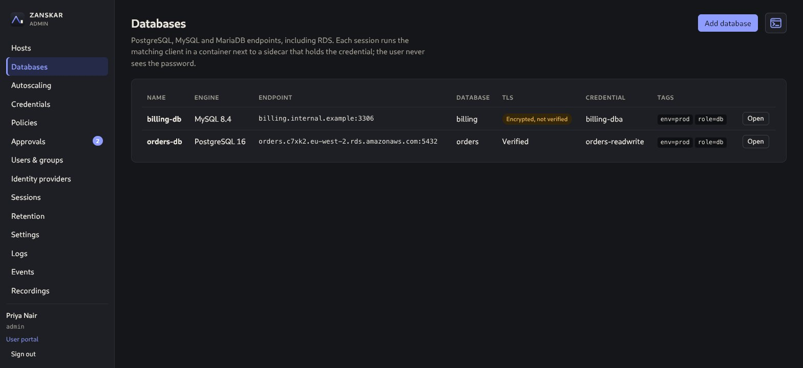
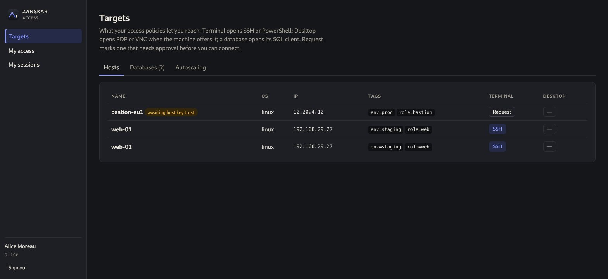
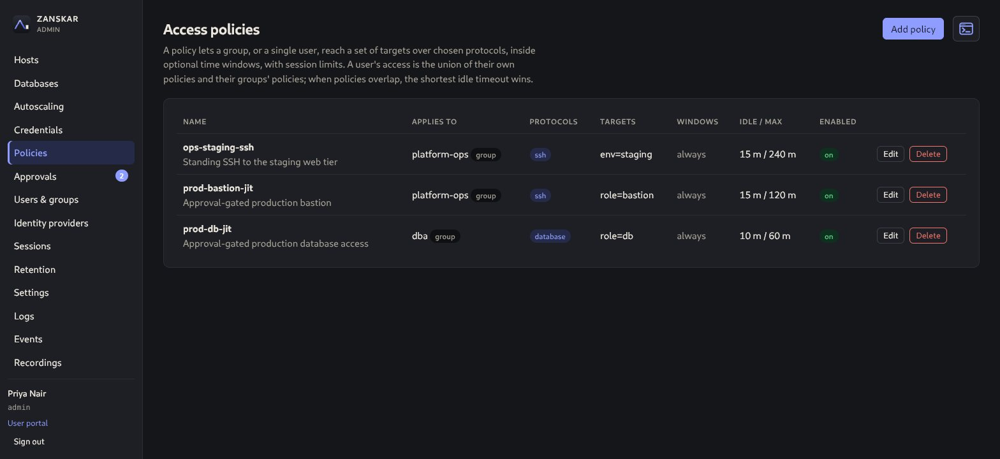
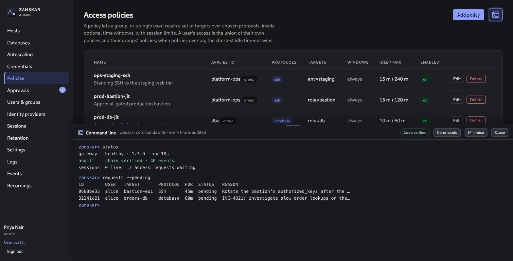

HOW-TO GUIDE
Run Zanskar day to day
Every task an administrator, auditor or user performs in Zanskar, in the order you meet them. It assumes the gateway is installed and you have signed in as the first admin.
Concepts in one minute
- Target
- A machine or database Zanskar can reach: a Linux or Windows host, a PostgreSQL endpoint, or an AWS Auto Scaling group whose healthy instances become targets.
- Credential
- How Zanskar authenticates to a target: a vaulted password, an SSH private key, an SSH certificate authority, or a Windows domain credential. Users never see it.
- Policy
- Who may reach which targets, over which protocols, when, with which session limits, and whether clipboard and file transfer are allowed. A policy can also require approval for each session.
- Roles
- admin configures and reviews, auditor reviews only, user connects. The UI has three portals to match: Admin, Audit and the user portal. Links to switch between them sit under your name in the sidebar.
Sign in and enroll MFA
- Open the gateway URL and enter your username and password.
- On first sign-in Zanskar shows a QR code. Scan it with any TOTP app (1Password, Google Authenticator, Aegis) and enter the six-digit code. Enrollment completes only after a valid code, and the step survives a page refresh.
- Every later sign-in asks for password then code. Sign out from the sidebar; sessions also expire on idle.
- The logo at the top of the sidebar takes you back to the first page of the portal you are in, or to sign-in when your session has expired.
Signing in through your identity provider instead? An admin adds it under Identity providers (OIDC or LDAP/Active Directory) and maps provider groups to Zanskar roles. Provider users still enroll TOTP unless the provider handles MFA and the admin sets the mapping accordingly.
Add users and groups
- Users & groups in the admin sidebar. Create a user with a username, display name and one or more roles. Leave the password blank and a one-time password is generated and shown once, for you to pass on; at their first sign-in the user must replace it, then enrol an authenticator, before reaching anything. Reset password on the same page does the same later.
- Create a group, then add members. Policies are written against groups (or a single user), so a sensible starting set is one group per team that needs access, plus one for approvers.
- Disable a user to block sign-in without deleting history; revoke their sessions from the same page if they are connected right now.
Sign in with Active Directory, LDAP or single sign-on
Zanskar can keep its own accounts, or accept the ones your directory already has. Identity providers in the admin sidebar takes an LDAP directory (Active Directory is the common case) or any OIDC provider. Several can be enabled at once: a sign-in tries local accounts first, then each enabled provider in turn, so adding a directory never locks out the admin you started with.
Active Directory over LDAPS, end to end
Two things have to exist on the directory side before you start: a read-only service account for Zanskar to search with, and LDAPS (or StartTLS) on the controller. Zanskar will not send a bind password over a plain connection.
- Make the bind account. Any ordinary user with read access to the tree you will search. It never needs to log in anywhere, so give it a long password and no privileges.
- Decide which directory groups grant what, and create a Zanskar group for each one first, under Users & groups. Policies are written against Zanskar groups; the provider only decides who lands in them. A group per role you actually grant, such as
ad-windowsandad-linux, keeps the mapping readable. - Add the provider. Name it after the directory, choose type ldap, and fill in:
Field Active Directory example URL ldaps://dc1.corp.example:636. Plainldap://is accepted only with StartTLS ticked.CA certificate (PEM) The certificate that signs the controller's LDAPS certificate, or the self-signed certificate itself. Required, unless you tick skip verification, which is for a lab and says so. Bind DN and password CN=zanskar-bind,OU=Service,DC=corp,DC=exampleand its password. Sealed in the vault like any other secret.Base DN Where users live, for example DC=corp,DC=example.User filter (&(objectClass=user)(sAMAccountName=%s)). Exactly one%s, which is the name typed at the login form.Username attribute sAMAccountNameon Active Directory,uidon OpenLDAP. The Zanskar username is this value, lowercased.Group attribute memberOf. Leave it blank to search the group tree instead, and then set the group base DN, filter and name attribute below it. - Test connection before saving anything else. It binds as the service account and reports what failed: a TLS problem, a bad bind, or a base DN that returns nothing. A green result means the directory is reachable and the credentials work.
- Choose what a new person gets. Create a Zanskar user on first sign-in provisions the account the first time someone authenticates, with the roles you tick under Default roles. Leave it off and only people you have already created may sign in through the directory.
- Map the groups. One per line,
directoryGroupName=zanskarGroupId; the console lists your groups and their ids underneath, so you can copy them. Use the group's plain name, not its full DN; case does not matter. Membership in the mapped groups is recalculated at every sign-in, so taking someone out of a directory group takes their access away the next time they log in. Groups you have not mapped are left alone, which means a person can be in a Zanskar group by hand and in mapped ones through the directory at the same time. - Sign in as a real person to check the whole path. They type their directory username and password at the normal login form. Zanskar provisions the account, puts them in the mapped groups, and then asks them to enrol an authenticator, because the second factor is Zanskar's own unless the provider handles it. Their Targets page should show exactly what the policies for those groups allow, and nothing else.
Two failures are worth knowing in advance, because neither says what it is.
- Every LDAPS connection is reset. A domain controller listens on 636 as soon as it is promoted, but it binds a certificate only if it trusts the chain. A certificate the controller issued to itself does not chain to anything it trusts, so the handshake is reset with no TLS alert at all, and
openssl s_clientfails the same way Zanskar does. Put the certificate in the controller's own Trusted Root Certification Authorities store and restart theNTDSservice. A certificate from your internal CA does not have this problem. - The directory answers but no one can sign in. Almost always the user filter. Test it on the controller with
dsqueryorldapsearchusing the same base DN and bind account; if that returns nothing, Zanskar will not either.
OIDC single sign-on
Type oidc needs the issuer URL, a client id and secret; discovery finds the rest. The username claim is usually preferred_username, and the groups claim feeds the same group mapping as LDAP. Restrict who may use it with allowed email domains. The console shows the exact redirect URI to register at the provider once the entry is saved; it is /api/v1/auth/oidc/<provider id>/callback on your gateway's own hostname.
Whichever you use, keep one local admin with a password and an authenticator. If the directory is unreachable, that account is how you get back in.
Store a credential
Credentials in the admin sidebar. Give it a name, choose the type, and paste the secret once. It is sealed with envelope encryption under the master key and the API never returns it again, only its metadata.
| Type | Use it for |
|---|---|
| Password | SSH password login, WinRM and RDP domain or local accounts, PostgreSQL users. Username plus password. |
| SSH key | SSH with a private key. Paste an existing key or let Zanskar generate an Ed25519 key and copy the public half into the target's authorized_keys. |
| SSH certificate authority | Recommended for Linux. Keyless SSH: Zanskar generates the authority, mints a minutes-long certificate per session, and the console prints the TrustedUserCAKeys commands for each target. Optionally limit which login users it issues for; the target's auth log names the Zanskar user on every login. |
| EC2 Instance Connect | Autoscaling groups. No stored secret; Zanskar pushes a one-time key through the AWS API using the cross-account role. |
Passwords and SSH keys are rotated in place: the credential keeps its id, so every target bound to it picks up the new secret immediately. A certificate authority is rotated in two steps from its Setup panel, prepare then cut over, with a per-target test in between, so no host is left refusing logins.

Enroll targets
Hosts in the admin sidebar, then Add host (databases have their own Databases page). A name, an address and an OS family are enough to start; tags such as env=prod or role=db are what policies select on, so tag consistently from day one.
Linux over SSH
- Add the target with OS family linux and the SSH port if it is not 22.
- Open the target and bind a credential to the SSH protocol.
- Probe. Zanskar connects, learns which protocols the host offers, and captures the host key fingerprint. The key is shown as unknown until you trust it.
- Compare the fingerprint with the host out of band, then Trust it. From now on a changed host key blocks every connection to that target until an admin re-approves it.
- If the machine moves, edit the target's address. Saving a new address clears the trusted host key and the pinned RDP and WinRM certificates, because a new address may be a different machine: probe and trust it again.
Windows over RDP and WinRM
Same flow with OS family windows. The probe captures the RDP and WinRM listener certificate fingerprints instead of an SSH key, and pins those. Bind a domain or local credential to each protocol you want to offer. RDP needs guacd configured on the gateway (see Start guacd); WinRM terminals do not.
WinRM needs an HTTPS listener on 5986
Windows ships WinRM with an HTTP listener on 5985 only. Zanskar never speaks plaintext WinRM: it pins the listener's certificate and connects over TLS to 5986, so a host with only the default listener probes as winrm unreachable and the PowerShell button never appears in the user portal. Create the listener once on each Windows host, as administrator (this is the script the AWS reference deployment runs at first boot):
$cert = New-SelfSignedCertificate -DnsName $env:COMPUTERNAME -CertStoreLocation Cert:\LocalMachine\My -NotAfter (Get-Date).AddYears(2)
winrm quickconfig -q -force
Get-ChildItem WSMan:\localhost\Listener | Where-Object { $_.Keys -contains "Transport=HTTPS" } | Remove-Item -Recurse -ErrorAction SilentlyContinue
New-Item -Path WSMan:\localhost\Listener -Transport HTTPS -Address * -CertificateThumbPrint $cert.Thumbprint -Force | Out-Null
Set-Item WSMan:\localhost\Service\Auth\Basic -Value $true
Set-Item WSMan:\localhost\Service\AllowUnencrypted -Value $false
netsh advfirewall firewall add rule name="WinRM HTTPS" dir=in action=allow protocol=TCP localport=5986A WinRM credential must be a local administrator
Zanskar opens a WinRS shell on the target and runs each line through PowerShell inside it. WinRM decides who may do that from its RootSDDL, and out of the box that grants BUILTIN\Administrators and nobody else. The Remote Management Users group, which most guides tell you to use, only covers PowerShell session configurations, which is a different door.
So the account you vault for WinRM has to be a local administrator on every host it reaches. On a domain, put the operator account (or the group holding it) in the local Administrators group:
net localgroup Administrators "CORP\svc-zanskar" /addIf you skip it, the credential authenticates and then the session is refused. Zanskar says so in as many words, and the target logs event 192 in Microsoft-Windows-WinRM/Operational: "The authorization of the user failed with error 5". RDP is unaffected; it needs only Remote Desktop Users.
- Allow TCP 5986 from the gateway in the host firewall (the last line) and in any security group in front of it. RDP is 3389 the same way.
- In the target drawer, Probe again: the WinRM row turns reachable and the drawer shows the listener certificate's SHA-256, which is now pinned. Re-probe after the certificate is renewed, or connections are refused with a pin mismatch.
- Bind a domain or local credential to the WinRM slot and save.
- Make sure a policy grants winrm on this target. The PowerShell button appears in the user portal once the probe marks WinRM reachable and the policy allows it.
PostgreSQL, MySQL and MariaDB, including Amazon RDS
- Under Databases, add the endpoint with its engine (postgres, mysql or mariadb), hostname and port (5432 or 3306). Optionally record the engine version so the matching
psql,mysqlormariadbclient is used, the database to open, and how TLS to the database is checked. Verified is the default and needs the CA bundle that signs the database's certificate: for Amazon RDS, paste your region's bundle fromhttps://truststore.pki.rds.amazonaws.com/<region>/<region>-bundle.pem(the global bundle is too large). Encrypted, not verified is available and shows a warning on the target, since whoever can intercept the connection could then impersonate the database and receive its password. - In its credential slot pick a vaulted password credential, or User supplied to have each user type their own database login.
- Ensure Docker or Podman is available on the gateway host. Each session starts a client container connected to a credential-holding sidecar on a private per-session network: pgbouncer for PostgreSQL, the gateway's own image running its MySQL relay for MySQL and MariaDB. The container the user types into never receives the password; the sidecar refuses re-authentication so it cannot be used to guess one.
- A MySQL or MariaDB session opens with no schema selected; users pick one with
USE.

AWS Auto Scaling groups
An autoscaling group is enrolled once and then tracks itself: Zanskar polls it, and whichever instances are healthy right now are what users can reach. Nobody adds or removes a host by hand. Linux and Windows groups are both supported.
Zanskar reads the group through a role in your AWS account that only this gateway may assume. It never wants an access key.
- Autoscaling groups in the admin sidebar shows the AWS principal this gateway runs as, detected from its instance profile or from IRSA on Kubernetes. If it cannot tell, it says so rather than printing a placeholder ARN, and you set
ZANSKAR_AWS_GATEWAY_PRINCIPALto the role the gateway actually runs as. - Enroll group: the region and the group's name in AWS. Then Show the IAM setup. Zanskar mints an ExternalId for this group and prints a CLI script and a CloudFormation template that create a read-only role trusting this gateway and that ExternalId, plus the two policy documents if you would rather paste them yourself.
- Run the script in the account that owns the group, paste the role's ARN back, and Test access. The test assumes the role and describes the group, and when it fails it names the stage that failed rather than the whole thing.
- Set the OS family and tick the capabilities the instances actually serve: ssh for Linux, rdp and winrm for Windows. Bind a credential to each one, then Enroll and Sync.
- Healthy instances show up for users under the Autoscaling tab of their Targets page. They connect to the newest healthy instance, or pick one from the list. When the instance someone is on is terminated, their session offers failover: one click moves them to another healthy instance, on a fresh session that records which one it replaced.
An instance is healthy only when all three agree: the group says InService, the load balancer is happy or absent, and the gateway's own probe reaches every capability port.
Which credential for which OS
| Group | Credential |
|---|---|
| Linux | SSH certificate authority is the best fit: put the authority's public key in the launch template's user data once, and every instance the group ever launches trusts it. EC2 Instance Connect is the alternative and stores no secret at all: Zanskar pushes a one-minute key through the AWS API for each session. A plain SSH key works too, if the launch template installs it. |
| Windows | A vaulted domain or password credential, bound to rdp and winrm separately if you want both. Remember that the WinRM account must be a local administrator on the instances. |
Windows instances need to arrive ready
There is no moment to configure an instance that appeared four minutes ago and may be gone in an hour, so the machine image or the launch template's user data has to do it. For a Windows group that means the HTTPS WinRM listener, the firewall rule, the operator account in local Administrators, and the domain join if you use one. Bake it into the image where you can; user data that runs on first boot works too, and is slower to become reachable.
Each instance is pinned separately. The first time an instance answers, Zanskar keeps the RDP and WinRM certificate it presented, along with its SSH host key for a Linux group. If that instance later presents a different certificate, it is not re-trusted: the instance is marked unhealthy, the change is audited, and sessions on it end. Replacing a certificate in place therefore takes the instance out of the pool until the group replaces it, which is the behaviour we want and will surprise someone eventually.
This is trust on first sight, and weaker than an administrator reading a fingerprint off the console of a machine that will be there tomorrow. For SSH, Zanskar does better where AWS allows it: the host key is cross-checked against the fingerprints cloud-init prints to the serial console, and an instance whose key does not match what the console published is refused outright rather than pinned.

Write an access policy
Policies, then Add policy. A policy binds one group or one user to a set of targets chosen by tag, over the protocols you tick.
- Targets by tag:
env=stagingselects every target carrying that tag now and in the future. - Time windows: optional; for example weekdays 08:00 to 20:00 in a named time zone. Outside the window the target is not listed.
- Idle and maximum session: a session ends after the idle timeout or the maximum duration, whichever comes first. When several policies apply, the shortest idle timeout wins.
- Clipboard and file transfer: off unless enabled. Clipboard syncs text both ways between the browser and RDP or VNC desktops, with a clipboard panel in the session bar for browsers that refuse automatic access; a terminal's copy and paste is the browser's own and is not gated. File transfer switches on the SFTP panel for SSH and drive redirection for RDP.
- Require MFA: demand a fresh TOTP code at connect time, not just at sign-in.
- Require approval: turns the policy into eligibility. Members can request access but cannot connect until an admin approves. See just-in-time access.
Two more things a policy can carry. Rules add further selector-and-protocol pairs inside the same policy, so one policy can grant SSH to the web tier and RDP to the jump host without a second policy; the base selector and protocols are simply rule zero. Keep recordings sets a retention in days for the sessions this policy grants; a target can set its own, and the target's value wins. Both are shown in the policy list.

Connect to a target
- In the user portal, Targets lists everything your policies allow, with one button per protocol. Click SSH or PowerShell for a terminal, RDP or VNC for a desktop, psql for a database.
- The session opens in a new tab. A header shows the target, protocol, elapsed and idle time, and a recorded marker. The full-screen button hides everything but the session.
- For SSH targets whose policy allows file transfer, Files opens a panel beside the terminal: browse the remote home directory, download a file, or upload one. Transfers are audited with path and size and are not part of the recording.
- Disconnect ends the session. Idle and maximum limits end it for you; the recording is finalised either way.
My sessions shows your own active and past sessions. If the host key of a target changed since it was trusted, the connection is refused and the target shows awaiting host key trust until an admin reviews it.
Just-in-time access: request, approve, revoke
Approval-gated targets show Request instead of a connect button.
- User: click Request, write the reason (it is recorded on the request and in the audit log) and choose a duration up to the policy's maximum. The request appears under My access as pending.
- Admin: Approvals lists pending requests with user, target, protocol, reason and duration. Approve… opens the grant, where the admin can shorten or lengthen the duration up to the policy maximum and add a note, then starts the clock; Deny records a decision without access.
- User: the target's button becomes active for the granted window. Connect as many times as needed until it expires. Expiry ends the grant automatically, and the sweeper marks it expired within a minute.
- Admin: Revoke an active grant from the same page to end it early. Standing access from other policies is unaffected.
Every step is an audit event, shown on the Events page as Access requested, Access request approved, denied, revoked and Access grant expired (a SIEM receives the codes behind them, access.request.create and so on). Together with the recorded session this is the evidence trail auditors ask for.
Review recordings and the audit log
Admins find Events and Recordings in their own console, below Logs. An account that holds only auditor gets the same two pages as the Audit portal, and nothing else. Reading anything here is itself audited.
- Events: who signed in, who opened which target, what changed, who reviewed what. Filter by user, action, object type and time. The header shows chain intact when the hash chain verifies. details on a row names the action and the object in words, Authenticator enrolled on User alice; hover either for the stored action code and the full id, which is what an export or a SIEM carries.
- Recordings: every session with user, target, protocol, duration and how it ended. Review plays a terminal recording with a command list you can click to seek, or a desktop recording as video-style playback.
- Live: from the admin Sessions page an admin can terminate a session with a reason; an auditor can shadow it read-only while it runs.
Recordings and, for terminals, the command transcript can be downloaded from the recording page; each download is an audit event of its own, like each view.
![Zanskar admin console, Events page below Logs in the sidebar: filters for user, action, object type and time, a chain-intact indicator, and events in plain sentences: alice requested SSH access to bastion-eu1 and database access to orders-db, signed in and changed their password, and admin approved carol's request for database access to billing-db; that row is open and reads Action: Access request approved, Object: Access request carol to billing-db (database), with the approved minutes and when the grant expires](../assets/audit-events-1.3.0.jpg)
For your SIEM, set ZANSKAR_SIEM_SYSLOG_ADDR (syslog/CEF) or ZANSKAR_SIEM_WEBHOOK_URL plus ZANSKAR_SIEM_WEBHOOK_SECRET (signed JSON). Verify the chain from the command line on a schedule:
sudo bash -c 'set -a; . /etc/zanskar/env; set +a; runuser -u zanskar -- zanskar audit verify'Backups and retention
zanskar backup writes a consistent snapshot of the SQLite database plus the recordings directory while the service runs. The master key is never included; keep it escrowed separately. Restore stops the service first.
sudo bash -c 'set -a; . /etc/zanskar/env; set +a; runuser -u zanskar -- zanskar backup --out /secure/zanskar-$(date +%F).tar.gz'Retention in the admin sidebar sets a maximum age and a maximum total size for recordings. An hourly sweep deletes the oldest recordings beyond either limit and audits each deletion. Set it to match your compliance obligations before the disk does it for you. A policy or a target can keep its recordings longer with a retention of its own; the value is fixed on each recording when the session starts.
Settings, the TLS certificate and recording storage
Settings holds the runtime settings that apply the moment they are saved, without a restart. The first is the login banner: a system-use notification shown above the sign-in form before any credential is entered (whose system this is, that use is monitored and recorded, what signing in consents to), the control NIST AC-8, ISO 27001 and PCI DSS ask for. Plain text, line breaks kept, empty hides it; every change is audited with the previous and the new text.
The other runtime settings are the MFA requirement, the guacd address, the log level and the MySQL relay image. Each shows where its value comes from: the default, the environment file, or the console. Below them the install-time settings are listed read-only, with secrets masked; editing /etc/zanskar/env makes the console show Restart required with the names of the changed variables, and Restart drains live sessions first.
TLS certificate: what browsers see. A managed install serves a self-signed certificate until you upload a PEM chain and key here; the upload serves on the next connection and can be removed again. In proxy mode the card says the certificate is the proxy's business.
Recording storage: keep recordings in an S3-compatible bucket (Amazon S3, MinIO, Ceph). Test writes, reads back and deletes a probe object; Save and use makes the bucket active for the next session; Move copies existing local recordings into it in the background, checking each digest. Recordings are always read from where they were written.
Logs
Logs in the admin sidebar shows the gateway's most recent log lines from an in-memory ring, filtered by level and text, and downloads them as newline-delimited JSON, audited. It is what journalctl would show, without shell access. Raise the log level on the Settings page while you look at a problem, then set it back.
Work from the console's command line
Administrators can type Zanskar commands instead of clicking: the terminal-window icon at the top right of every admin page, or Ctrl+`, opens a command line at the bottom of the page. help or Commands lists what it understands: sessions, users, targets, policies, access requests, events, logs, settings, autoscaling groups and a restart. It is not a shell and cannot reach the gateway's host.
- It asks for a code first. The first time you open it, and again after 15 minutes without a command, enter a code from your authenticator app (a recovery code works too). An account without an authenticator cannot open it. Five wrong codes close it for 15 minutes without signing you out.
- It can do what the console can, no more. Every command goes through the same API and permission checks as the pages. Only administrators see it; the gateway refuses everyone else.
- Changes ask first. Ending a session, disabling a user or signing them out, resetting an authenticator, revoking a grant, changing a setting and restarting the gateway each say what will happen and asks you to type a word, usually the name of what you are changing.
- Every line is in the audit log, including lines that only read, as ran “…” on the command line with how it ended.
- No secrets, no host operations. Nothing takes a password or key, and backup, restore, key rotation and audit repair stay host commands (below).

status, then the access requests waiting for a decision.The full list, with every flag and an example, is in the command reference. To turn the command line off, set ZANSKAR_CONSOLE_CLI=off in the environment file and restart; it is not a console setting, so a stolen sign-in cannot turn it back on.
Host command reference
All commands read the same ZANSKAR_* environment as the server. On the package install, wrap them as shown above so they run as the zanskar user with /etc/zanskar/env loaded.
| Command | What it does |
|---|---|
zanskar serve | Run the gateway. Refuses to start with migrations pending. |
zanskar init | Write the environment file interactively or from flags; generates the master key. |
zanskar migrate | Apply pending schema migrations. Forward-only. |
zanskar admin create | Create an admin user; the password is prompted twice without echo, or read from ZANSKAR_ADMIN_PASSWORD for scripts. |
zanskar key status | List the data-key versions and how many sealed rows each still protects. |
zanskar key rotate | Start a new data-key version for everything sealed from now on. Restart the service afterwards. |
zanskar key rotate-master | Re-wrap every data key under a new master key (from ZANSKAR_NEW_MASTER_KEY, -generate, or a prompt) and, with -env-file /etc/zanskar/env, rewrite the key line in place; a key read from ZANSKAR_MASTER_KEY_FILE is rewritten in that file. Run it as root, which can replace files in /etc/zanskar: it checks that before rewrapping anything. Restart the service afterwards; the old key then opens nothing. See the master key. |
zanskar admin reset-mfa | Clear a user's authenticator so they re-enroll; audited. |
zanskar dbproxy | The MySQL and MariaDB relay the gateway runs in its own image beside a database session. Not for hand use. |
zanskar version | Print the build version. |
zanskar audit verify | Recompute and verify the audit hash chain. |
zanskar backup / restore | Snapshot or restore the database and recordings. Key never archived. |
zanskar keygen | Print a fresh master key. |
The HTTP API behind the UI is documented in OpenAPI 3.1; everything the console does can be scripted against it.